KM04 — Multiplication Tables Ki Tricks, ab yaad karna aasaan?
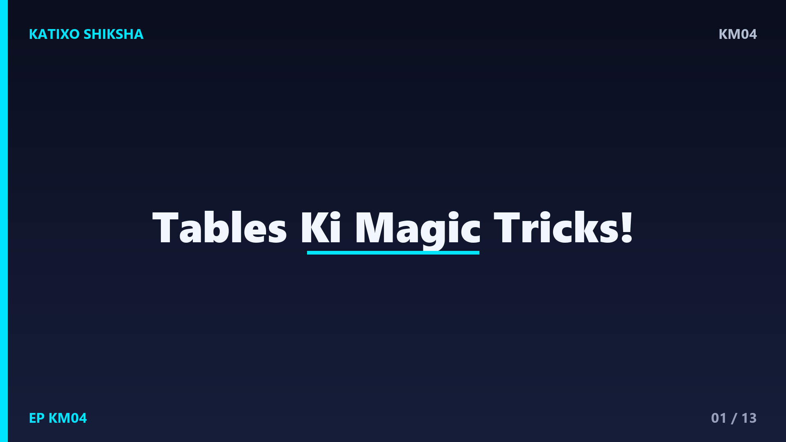
Slide 1Namaste बच्चों! Katixo KhojLab me तुम्हारा फिर से स्वागत है! आज हम सीखेंगे multiplication tables यानी पहाड़े याद करने की मज़ेदार tricks. बहुत बच्चों को tables याद करना मुश्किल लगता है, पर आज के बाद नहीं! क्योंकि tables रटने नहीं, बल्कि tricks से सीखे जाते हैं. multiplication का मतलब है बार-बार जोड़ना. जैसे 3 गुणा 4 का मतलब है 3 को चार बार जोड़ना. आज हम कई आसान tricks सीखेंगे, step by step. तो चलो शुरू करते हैं!
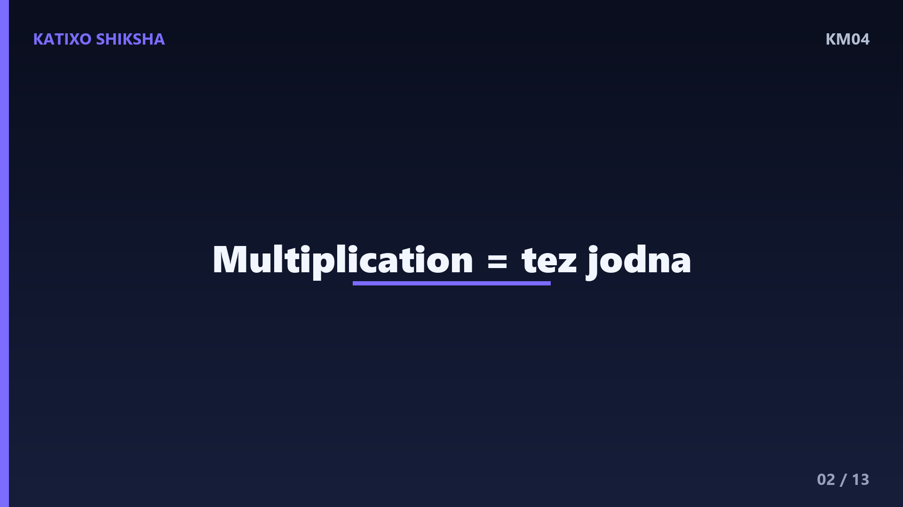
Slide 2सबसे पहले समझो multiplication होता क्या है. 4 गुणा 3 का मतलब है 4 का group तीन बार. सोचो तुम्हारे पास 3 plates हैं, और हर plate में 4 samose हैं. तो कुल कितने samose? 4 जोड़ 4 जोड़ 4 बराबर 12! इसलिए 4 गुणा 3 बराबर 12. बच्चों, multiplication सिर्फ़ तेज़ जोड़ना है. जब तुम ये समझ जाओगे, तो हर table अपने आप आसान लगेगा. अब चलते हैं सबसे मज़ेदार tricks की तरफ!
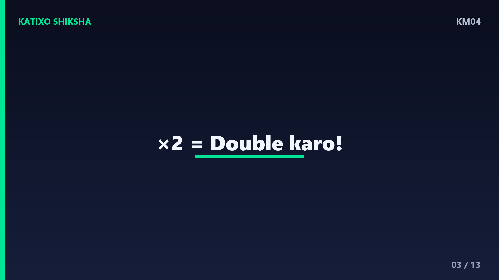
Slide 3पहली trick, सबसे आसान, table of 2. किसी भी number को 2 से गुणा करना यानी उसे दोगुना करना, यानी double! जैसे 2 गुणा 6, मतलब 6 को दो बार जोड़ो, बराबर 12. 2 गुणा 8 बराबर 16. आसान तरीका: number को खुद में जोड़ दो! 7 जोड़ 7 बराबर 14, तो 2 गुणा 7 बराबर 14. ये double वाली trick बहुत काम आती है. बच्चों, 2 का table तो अब तुम्हारी मुट्ठी में है!
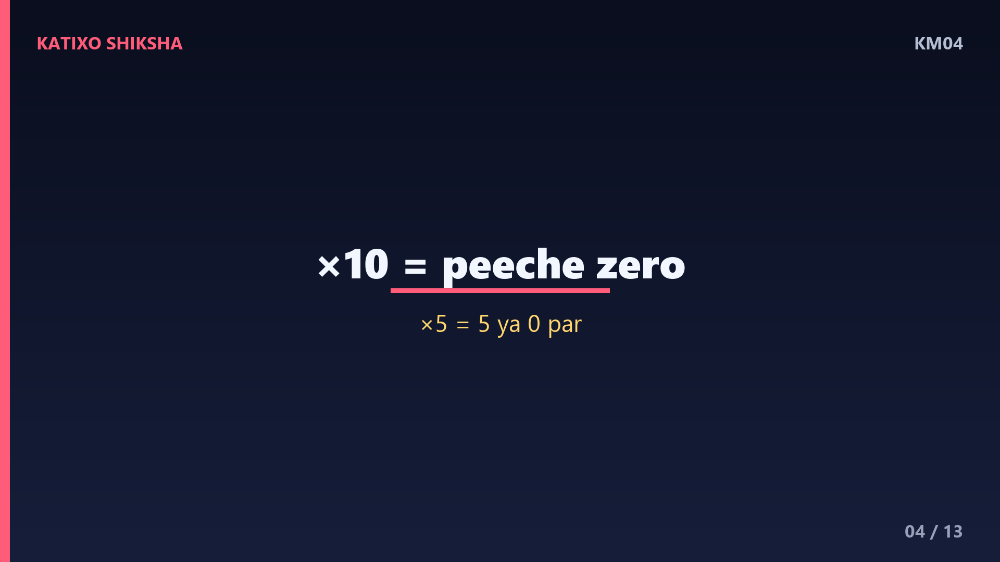
Slide 4दूसरी trick, सबसे मज़ेदार, table of 10. किसी भी number को 10 से गुणा करना सबसे आसान है: बस उसके पीछे एक zero लगा दो! जैसे 10 गुणा 5 बराबर 50. 10 गुणा 8 बराबर 80. 10 गुणा 3 बराबर 30. देखा, बस zero लगाओ और जवाब तैयार! और table of 5 की trick: 5 का हर जवाब या तो 5 पर खत्म होता है या zero पर. जैसे 5, 10, 15, 20, 25. कितना आसान है ना बच्चों!
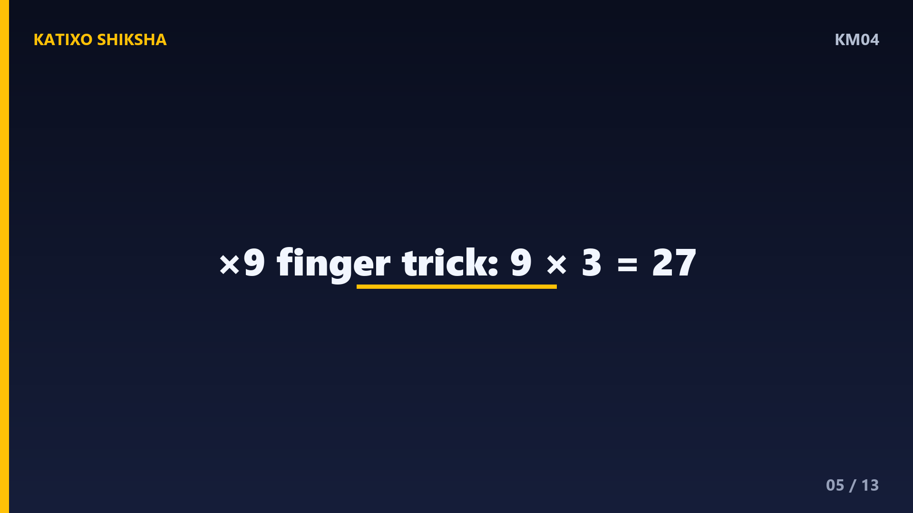
Slide 5अब आती है जादुई trick, table of 9, उँगलियों वाली! अपने दोनों हाथ खोलो, दस उँगलियाँ. मान लो 9 गुणा 3 निकालना है. बाईं तरफ से तीसरी उँगली मोड़ो. अब मुड़ी उँगली के बाईं तरफ बची उँगलियाँ गिनो: 2. और दाईं तरफ की उँगलियाँ गिनो: 7. तो जवाब है 27! 9 गुणा 3 बराबर 27. एक और: 9 गुणा 5 के लिए पाँचवीं उँगली मोड़ो, बाईं तरफ 4, दाईं तरफ 5, जवाब 45! कमाल की trick है ना!
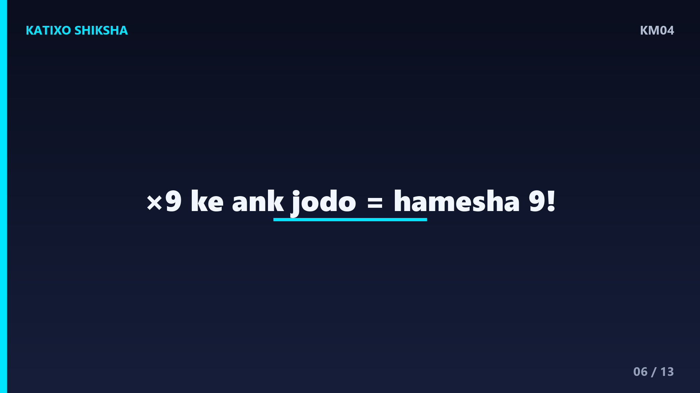
Slide 6अब एक और जादू, table of 9 का दूसरा तरीका. 9 के हर जवाब में, दोनों अंकों को जोड़ो तो हमेशा 9 आता है! देखो: 9 गुणा 2 बराबर 18, और 1 जोड़ 8 बराबर 9. 9 गुणा 4 बराबर 36, और 3 जोड़ 6 बराबर 9. 9 गुणा 7 बराबर 63, और 6 जोड़ 3 बराबर 9. है ना हैरान करने वाला! इस trick से तुम अपना जवाब check भी कर सकते हो. 9 का table सबसे मज़ेदार है, बच्चों!
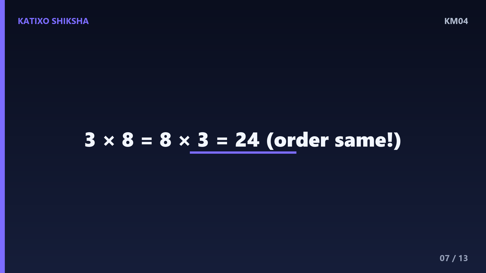
Slide 7अब एक बहुत ज़रूरी trick: order बदलने से जवाब नहीं बदलता! इसे कहते हैं commutative property. मतलब 3 गुणा 8 और 8 गुणा 3, दोनों का जवाब एक ही है, 24! तो अगर तुम्हें 8 का table कठिन लगता है, तो उसे उल्टा करके सोचो. जैसे 8 गुणा 2 को 2 गुणा 8 की तरह सोचो, double करके 16! इस trick से तुम्हें आधी tables अपने आप आ जाएँगी. कम मेहनत, ज़्यादा फ़ायदा, बच्चों!
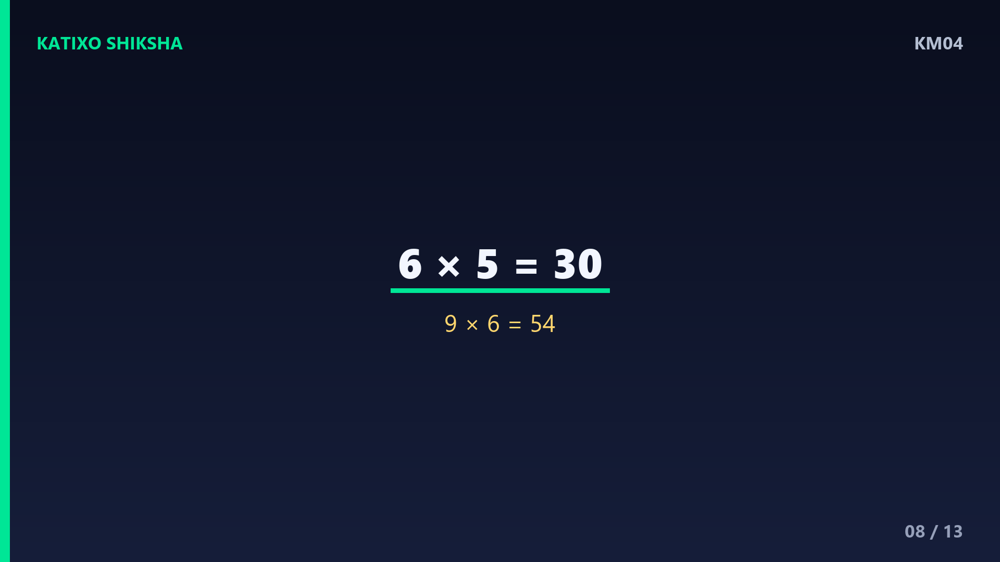
Slide 8अब एक worked example, मुश्किल दिखने वाला सवाल trick से हल करते हैं. निकालो 6 गुणा 5. table of 5 की trick याद करो: जवाब 5 या zero पर खत्म होता है. 6 गुणा 5 बराबर 30! अब एक और: 9 गुणा 6. उँगली वाली trick से, छठी उँगली मोड़ो, बाईं तरफ 5 और दाईं तरफ 4, जवाब 54! और check करो: 5 जोड़ 4 बराबर 9, सही! देखा बच्चों, tricks से कठिन सवाल भी खेल बन जाते हैं!
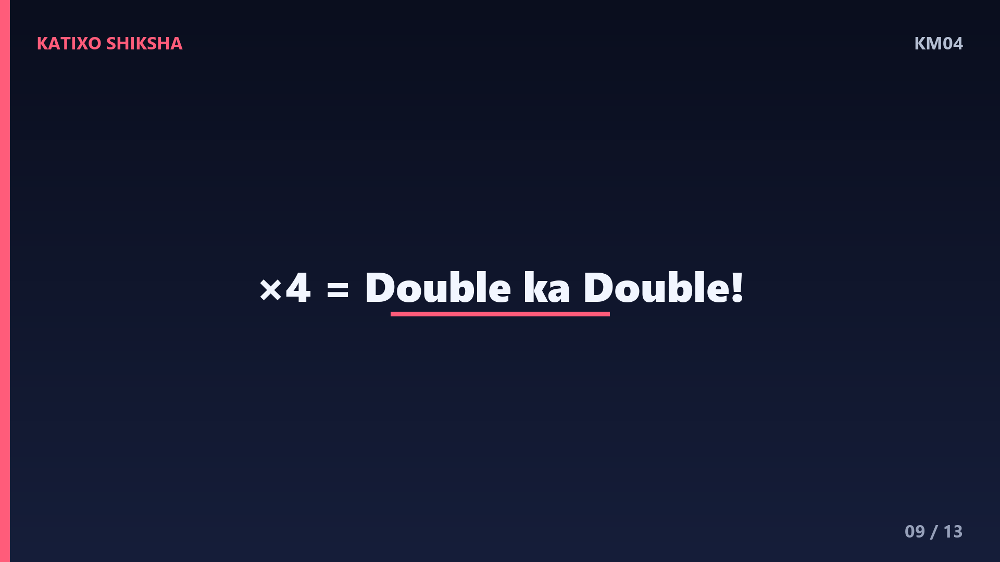
Slide 9एक और कमाल की trick, table of 4. 4 से गुणा करना यानी double का double! मतलब number को पहले 2 से गुणा करो, फिर जवाब को फिर से 2 से गुणा करो. जैसे 4 गुणा 7 के लिए: पहले 7 का double, बराबर 14. अब 14 का double, बराबर 28! तो 4 गुणा 7 बराबर 28. इसी तरह 4 गुणा 6: पहले 12, फिर 24. double-double की ये trick 4 का पूरा table आसान कर देती है, बच्चों!
Slide 10अब समय है तुम्हारी बारी! Chalo try karein! तीन सवाल हैं, video रोको aur copy me हल करो. पहला: 10 गुणा 7 कितना होता है? दूसरा: उँगली वाली trick से बताओ, 9 गुणा 4 कितना होता है? तीसरा: double-double trick से बताओ, 4 गुणा 8 कितना होता है? जल्दबाज़ी मत करना, सही trick चुनना. हो गया? शाबाश! अब अगली slide पर answers देखते हैं. खुद से कोशिश करना सबसे ज़रूरी है, बच्चों!
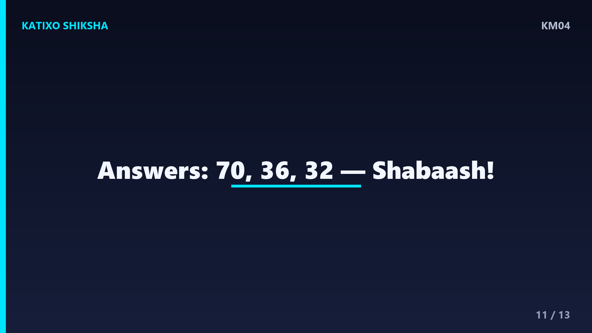
Slide 11चलो answers मिलाते हैं! पहला: 10 गुणा 7, बस 7 के पीछे zero लगाओ, बराबर 70! दूसरा: 9 गुणा 4 के लिए चौथी उँगली मोड़ो, बाईं तरफ 3 और दाईं तरफ 6, जवाब 36! और check: 3 जोड़ 6 बराबर 9, सही! तीसरा: 4 गुणा 8 के लिए double-double, पहले 8 का double 16, फिर 16 का double 32! तो जवाब 32. कितने सही हुए बच्चों? जो गलत हुए, उनकी trick फिर से देखो!
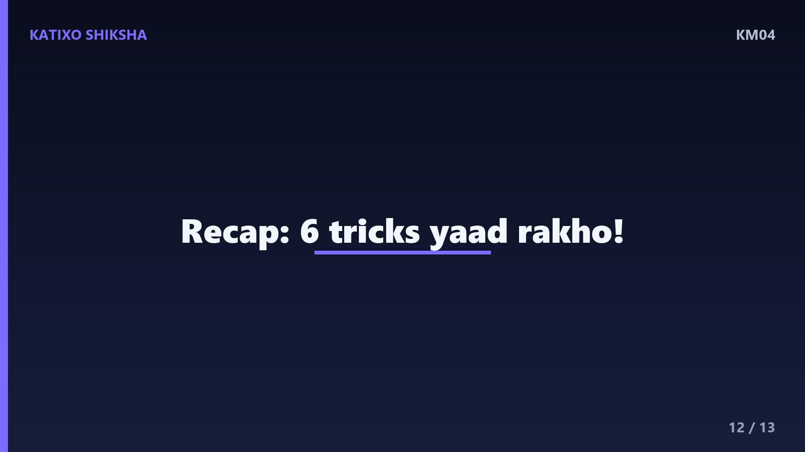
Slide 12चलो अब पूरा recap करते हैं! table of 2 यानी double करो. table of 10 यानी पीछे zero लगाओ. table of 5 का जवाब 5 या zero पर खत्म. table of 9 के लिए उँगली वाली trick, और अंक जोड़ो तो 9. table of 4 यानी double का double. और सबसे बड़ी trick: order बदलने से जवाब नहीं बदलता! बस इन tricks को रोज़ इस्तेमाल करो aur तुम tables के master बन जाओगे, बच्चों!
Slide 13शाबाश बच्चों! आज तुमने multiplication tables की कमाल की tricks सीख लीं, अब tables याद करना सच में आसान है! रोज़ थोड़ी-थोड़ी practice करते रहना, उँगलियों वाला खेल खेलना, फिर पहाड़े खेल जैसे लगेंगे. अगर मज़ा आया तो Katixo KhojLab subscribe karo, like करो aur bell दबाओ ताकि हर नया मज़ेदार lesson सबसे पहले तुम तक पहुँचे! अगली बार एक नए topic के साथ मिलेंगे. तब तक सीखते रहो, मुस्कुराते रहो. Shabaash, milte hain agle episode me!